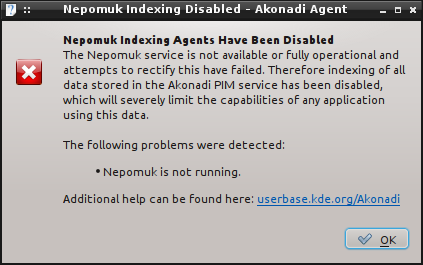
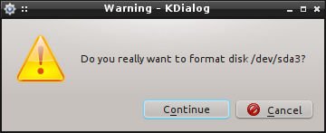
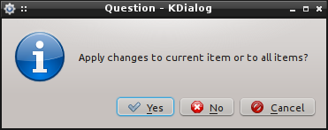
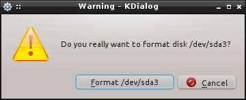
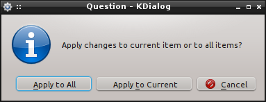

pub_date: 2011-01-21 21:00:00 +01:00
public: yes
tags: ["KDE","ui"]
title: "Common user interface mistakes in KDE applications, part 3: Message Boxes"
Message boxes are part of the ordinary pain the user has to face daily while using his computer. One should strive to avoid them whenever possible: a good message box is a dead message box! Aza Raskin wrote a great article on the subject: "Never use a warning when you mean undo".
"OK-only" message boxes
With "OK-only" I mean a message box which shows some text and an "OK" button to close it.
There is almost no good reason to use "OK-only" message boxes. These message boxes can be turned into information panes at the top of the application window (KTitleWidget can be used for this, but maybe we need a more specialized widget) or turned into notifications.
My latest most-hated "OK-only" message box is the one which pops a minute or two after login when Nepomuk is disabled:

Ideally, such information should be displayed when the user disables Nepomuk, not each time he logs in (I understand this is probably not easy to implement because Nepomuk KCM does not know about Akonadi, hence the "ideally").
One can't always avoid messages boxes
Sometimes you have to resort to message boxes, maybe it is too late in the development cycle to introduce an undo feature, or the action you are about to perform cannot be undone or because you really need a clue from the user as to what to do next. In this case, you want to avoid a few common mistakes.
Picking a KMessageBox method
KMessageBox API is quite complete, to the point where it is difficult to choose which method to use. The most useful "sets" of methods are warningContinueCancel* and questionYesNo*.
The API is unfortunately not very intuitive: you should make your choice based on the following criteria:
- What kind of message box do you need?
If your application is about to do something dangerous, you want to use one of the warning* methods. If your application needs more information before performing an action, you should use one of the question* methods.
- Do you need a Cancel button?
If so, pick a method whose name ends with Cancel
- Do you need one or two action buttons?
If you need one, pick one of the *Continue* methods. If you need two, pick one of the *YesNo* methods.
Note: the fact that the buttons will be labeled "Yes" and "No" does not matter, we will fix this in the next section.
A warning message box:

A question message box (ignore the buttons for now!):

Making your buttons more useful
Users are lazy creatures: when a message box pops up, they want to get rid of it with as little work as possible. For this reason, a lot of them won't bother to read the message box text if they can take a decision by only reading the buttons. It is a lot more difficult for them to choose if the button says "OK", "Yes" or "No" ("Cancel" is usually not a problem). This is why you want to ensure the message box buttons provide enough information for them to make an informed choice.
KMessageBox makes this easy: most of its methods accept optional parameters to define their buttons. These parameters are KGuiItem, a simple class which can be used to define the icon and text of a button, among other things.
Here are our message boxes, with explicit button items:


Before you start fixing all your message boxes with custom KGuiItem, be sure to have a look at the KStandardGuiItem namespace first. This namespace provides ready-to-use KGuiItem for common actions such as Discard, Save, DontSave, SaveAs, Apply, Clear and a few others. Whenever possible, using items from this namespace is preferred. Doing so ensures the buttons of your message boxes use icons and texts which are consistent with other KDE applications.
The "Do not ask again" check box
KMessageBox provides a simple way to add a "Do not ask again" check box to your message boxes. I personally dislike those check boxes. Whenever the user is faced with such a dialog it feels like he is making a very definitive decision. Most users won't know for sure whether they may need this dialog in the future and will refrain from checking the box for fear of missing a safeguard later. Furthermore it is not always possible to undo the check of this box later and when it is possible it means hunting the option in the configuration dialog.
I think it is our duty as application developers to make choices and decide whether a message box is really needed here or if it is "just in case".
Conclusion
That's all for today, now go fix your or others' message boxes!
If you are not already bored to death by message boxes, here is another interesting read on the subject: "Are you sure? How to write effective confirmations".

{kind=link}
{kind=link}
{kind=link}
{kind=link}
{kind=link}